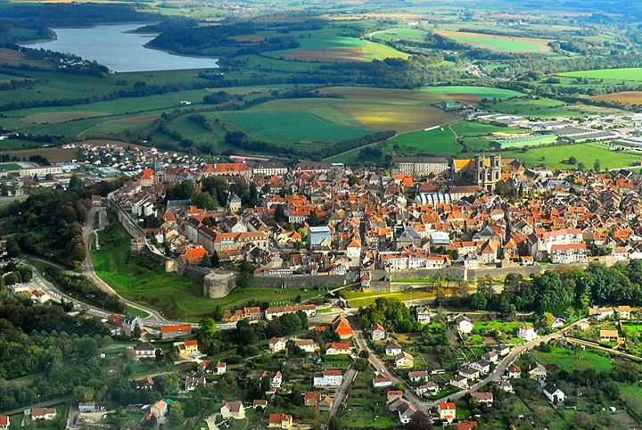

Je suis étudiante de troisième année en Bachelor in Management à Audencia Business School. Dans le cadre du séminaire de culture numérique, je vous invite à en apprendre un peu plus sur moi! Cependant, si vous souhaitez en savoir plus sur mon école, ça se passe ci-dessous :
Cliquez-ici!
Je suis originaire de l'Est de la France et plus précisement de la ville de Langres. Connue pour être la ville natale du philosphe des Lumières Denis Diderot, elle détient également la première place sur le podium du classement des villes les plus froides de France! Preuve à l'appui :
À l'approche de mes 20 ans, j'ai déjà visité plus de 15 pays aux quatre coins du monde. Parmi mes voyages favoris on retrouve l'Italie, la Nouvelle-Zélande et Taïwan!
Après avoir complété mon Bachelor, j'envisage de continuer mes études afin de décrocher un Master dans une grande école de commerce française. Une fois celui-ci en poche, je souhaiterais faire une année de césure pour partir à l'étranger avant d'entrer définitivement dans le monde du travail!